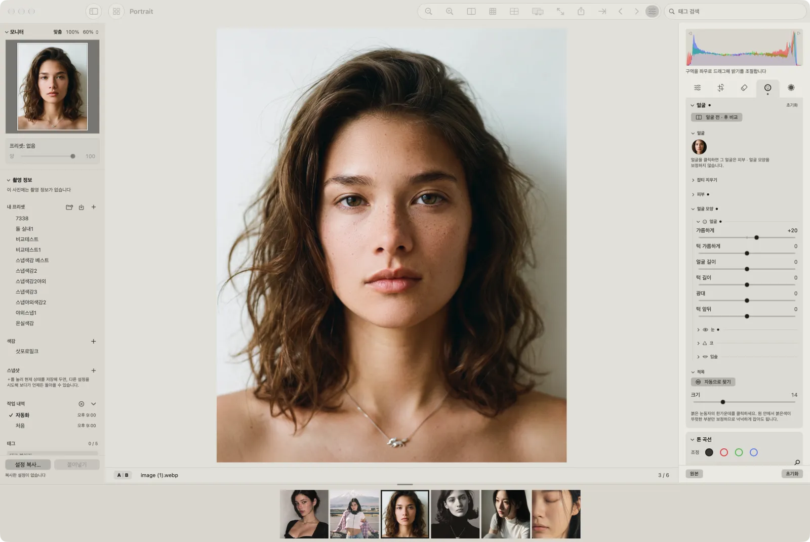
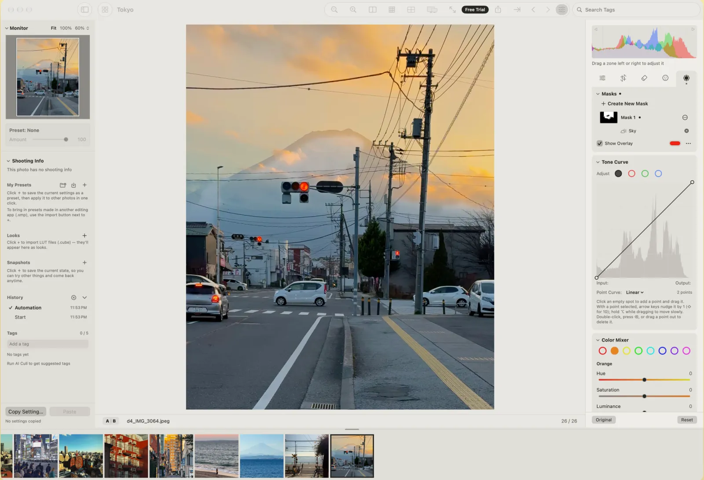

가져오기 없이, 폴더 그대로
SD카드나 외장 SSD의 폴더를 열면 바로 사진이 뜹니다. 카탈로그도 데이터베이스도 없고, 보정은 사진 옆 XMP 파일에 적혀 원본은 그대로입니다.
가져오기 없이 폴더를 열면 바로 보고, 고르고, 현상합니다. 사진은 맥 · 윈도우 PC 밖으로 나가지 않고, AI는 모두 내 컴퓨터 안에서 돕니다.
무료로 받고 30일 동안 모든 기능을 써 보세요. macOS 26 이상. 윈도우는 10(64비트) 이상.
윈도우에서 'Windows의 PC 보호' 창이 뜨면 '추가 정보' → '실행'을 클릭하세요.

카메라마다 맞춘 RAW — 130기종 넘는 카메라에 맞춘 프로필로 RAW를 엽니다. 노출 · 톤 곡선 · 컬러 그레이딩까지, 수천 장도 빠르게 넘기며 보정합니다.
SD카드나 외장 SSD의 폴더를 열면 바로 사진이 뜹니다. 카탈로그도 데이터베이스도 없고, 보정은 사진 옆 XMP 파일에 적혀 원본은 그대로입니다.

피부는 매끈하게, 톤은 고르게, 결은 살립니다. 얼굴 · 턱 · 눈 · 코 · 입술 모양도 슬라이더로 다듬고, 같은 사람의 잡티는 여러 장에서 한 번에 지웁니다.

피사체 · 하늘 · 배경 · 사람을 클릭 한 번으로 고르고, 마스크마다 따로 보정합니다. 더하고 · 빼고 · 겹쳐 다듬습니다.

지우고 싶은 것을 칠하면 둘레에 맞게 메웁니다. AI는 모두 내 컴퓨터 안에서 돌고, 사진은 맥 · 윈도우 PC 밖으로 나가지 않습니다.

AI 연결을 켜면 Claude나 ChatGPT(Codex)가 버터 편집을 직접 조작합니다. 연사에서 가장 잘 나온 컷 고르기, 말로 설명한 색감 보정, 레퍼런스 사진과 같은 톤 맞추기, 마스크 · 자르기 · 내보내기까지 대화로 맡길 수 있습니다.
직접 구입판(맥 · 윈도우) 기능입니다. Claude 또는 ChatGPT 계정이 따로 필요합니다. 처음에는 꺼져 있고, 켜 둔 동안에는 AI가 보는 작은 미리보기 그림이 연결한 AI 서비스로 전송됩니다.
“이 폴더의 연사 중 가장 잘 나온 사진에 별 3개를 줘”
“이 사진을 따뜻한 필름 느낌으로 보정해 줘”
“바탕화면의 레퍼런스 사진과 같은 톤으로 맞춰 줘”
사진을 삭제하는 명령은 없습니다. 보정은 실행 취소할 수 있습니다(맥 ⌘Z · 윈도우 Ctrl+Z).
버터 편집은 가져오기도 카탈로그도 없는 사진 편집 앱입니다. SD카드나 외장 SSD의 폴더를 열면 바로 사진이 뜨고, 고르고, RAW를 현상하고, 보정합니다. 수천 장도 빠르게 넘기도록 만들었습니다.
구독이 아닙니다. 한 번 사면 계속 씁니다.
보기 · 고르기 · 보정은 언제나 무료입니다.
“30일 무료 체험 시작”을 클릭하면 30일 동안 모든 기능을 씁니다. 체험이 끝나도 저절로 결제되지 않습니다.
체험이 끝나면 내보내기만 잠깁니다. 한 번 구입하면 계속 내보낼 수 있습니다.
앱스토어 밖에서 직접 사면 맥과 윈도우 어디서나, 컴퓨터 3대까지 씁니다.
질문이나 문제는 이메일로 보내 주세요: thefilmtravel@gmail.com
쓰시는 컴퓨터(맥 기종과 macOS 버전, 또는 윈도우 버전), 카메라 기종과 어떤 일이 있었는지 적어 주시면 빨리 도와드릴 수 있습니다.
앱은 무료로 받습니다. “30일 무료 체험 시작”을 클릭하면 30일 동안 모든 기능을 쓸 수 있습니다. 체험이 끝나면 보기 · 고르기 · 보정은 계속 되고, 내보내기에는 한 번 구입하는 잠금 해제가 필요합니다. 체험이 끝나도 저절로 결제되지 않습니다.
같은 Apple 계정으로 로그인한 맥에서 설정의 “구입” 탭 → “구입 복원”을 클릭합니다.
원본 사진은 바뀌지 않습니다. 보정값은 사진 옆의 .xmp 파일에 저장됩니다.
맥에서는 macOS가 지원하는 카메라, 윈도우에서는 앱에 든 RAW 해석기(LibRaw)가 지원하는 카메라의 RAW를 엽니다. 새 카메라는 macOS나 앱 업데이트 뒤에 열리는 경우가 많습니다.
USB로 연결한 카메라를 앱에서 조작하고, 찍은 사진을 고른 폴더로 바로 받습니다. 처음 연결할 때 카메라 접근을 허락해 주세요.